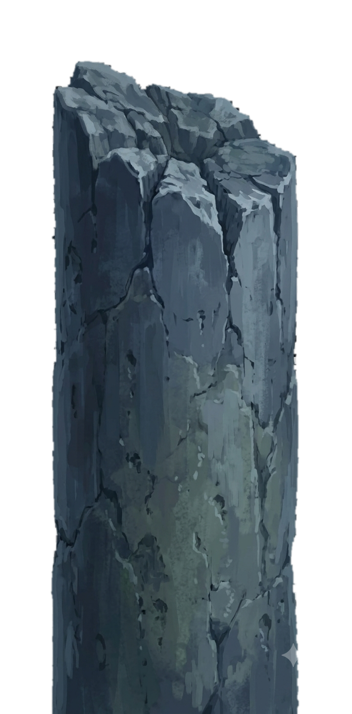

Jun 2025 — Sep 2025
Software Engineering Intern · Company Name
- What you built or shipped — start with a verb, end with an outcome.
- A second bullet: a technology you mastered or a metric you moved.

Above the Gray Fog · The Tarot Club
Software Developer — the gathering has convened
✦ Touch a crimson star to unveil that chapter ✦
The Fool
“The Fool that doesn’t belong to this era; the mysterious ruler above the gray fog; the King of Yellow and Black who wields good luck.”
I am Wladyslaw Pshenychnyy — a software developer seated above the gray fog. This is the placeholder for your introduction: who you are, what you build, and what you are searching for.
Write two or three sentences here about your background, your favourite technologies, and the kind of team or mission you want to join. Keep it human — the fog conceals enough already.
The Magician
Conjurations, tricks, and things willed into being.
A one-or-two sentence description of the project — the problem it solves and what makes it interesting.
UnityC#Shader
Description placeholder. What you built, why, and the result — numbers and outcomes read better than adjectives.
JavaScriptCanvasWeb Audio
Description placeholder. Mention your specific role if it was a team effort.
PythonFastAPIPostgreSQL
Justice
Dues paid in full, weighed and found worthy.
Jun 2025 — Sep 2025
Jun 2024 — Aug 2024
The Hermit
Knowledge hoarded in the lamplight, catalogued below.
C#PythonJavaScriptSQL
Unity.NETNode.jsReact
GitDockerBlenderFigma
EnglishUkrainianPolish
The Sun
Light gathered before the fog rolled in.
2023 — 2027 (expected)
Certificates
The Star
Recite the honorific name, and the star shall answer. Or simply write — both work.